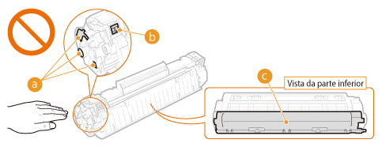

0KU8-005
|
Não descarte os cartuchos de toner usados em chamas abertas. Além disso, não armazene cartuchos de toner ou papel em um local exposto a chamas abertas. Isso pode causar a ignição do toner ou papel e resultar em queimaduras ou incêndio.
Se derramar ou espalhar o toner, varra ou limpe com um pano úmido e evite inalar qualquer poeira do toner. Não utilize aspirador de pó para limpar o toner derramado a não ser que o aspirador possua recursos de segurança para evitar explosão causada por pós. Caso contrário, o aspirador pode ser danificado ou pode haver explosão devida a descarga eletrostática.
Se você utiliza um marca-passo cardíaco
Os cartuchos de toner geram campos magnéticos de baixa intensidade. Se você utiliza um marca-passo cardíaco e sentir alguma anomalia, saia de perto do cartucho e consulte o seu médico imediatamente.
|
|
Tome cuidado para não inalar o toner. Caso aconteça, consulte um médico imediatamente.
Tome cuidado para que o toner não entre em seus olhos ou boca. Caso aconteça, lave os olhos e boca imediatamente com água fria e consulte um médico.
Tome cuidado para que o toner não entre em contato com sua pele. Caso aconteça, lave com água fria e sabão. Se sua pele ficar irritada, consulte um médico imediatamente.
Mantenha os cartuchos de toner e outros consumíveis fora do alcance de crianças pequenas. Se o toner for ingerido, consulte um médico ou centro de controle de envenenamento imediatamente.
Não desmonte ou modifique o cartucho de toner. Isso pode resultar em derramamento de toner.
Remova completamente a fita de vedação do cartucho de toner sem usar força excessiva. Caso contrário, isso pode resultar em derramamento de toner.
|
|
|
|
Manuseando o cartucho de toner.
Não se esqueça de usar o suporte para prender o cartucho de toner.
 Não toque nos contatos elétricos (
 ) ou na memória do cartucho de toner ( ) ou na memória do cartucho de toner ( ). Não abra o obturador de proteção do tambor ( ). Não abra o obturador de proteção do tambor ( ). Isso poderá arranhar a superfície do tambor ou expô-lo à luz. ). Isso poderá arranhar a superfície do tambor ou expô-lo à luz.  O cartucho de toner é um produto magnético. Mantenho-o longe de disquetes, discos rígidos e outros dispositivos que podem ser afetados pelo magnetismo. A não observância desta recomendação poderá resultar em perda de dados.
Armazenando os cartuchos de toner
Para garantir um desempenho seguro e satisfatório, guarde os cartuchos de toner nas seguintes condições ambientais.
Faixa de temperatura de armazenamento: 32 a 95 °F (0 a 35 °C) Faixa de umidade de armazenamento: 35 a 85% UR (umidade relativa), sem condensação* Armazene sem abrir até que o cartucho de toner venha a ser usado.
Ao remover o cartucho de toner desta impressora para o armazenamento, coloque o cartucho de toner removido no saco protetor original ou embrulhe-o com um pano espesso.
Ao armazenar o cartucho do toner, não o armazene em pé ou de cabeça pra baixo. O toner poderá se solidificar e pode não voltar à sua condição original mesmo quando sacudido.
* Mesmo dentro da faixa de umidade do armazenamento, gotículas de água (condensação) podem se formar dentro do cartucho do toner se houver uma diferença de temperatura dentro e fora do cartucho de toner. A condensação dentro do cartuchos e toner afetará de modo adverso a qualidade de impressão.
Não armazene o cartucho de toner nos seguintes locais
Locais expostos a chamas abertas
Locais expostos à luz clara direta ou à luz do sol por cinco minutos ou mais
Locais expostos a uma atmosfera excessivamente salgada
Locais em que haja gases corrosivos (isto é, amônia ou sprays aerossóis)
Locais sujeitos a alta temperatura ou umidade
Um local sujeito a fortes alterações na temperatura e umidade, onde condensações podem ocorrer facilmente
Locais com uma grande quantidade de poeira
Locais ao alcance de crianças
Tome cuidado com cartuchos de toner falsificados
Saiba que há cartuchos de toner Canon falsificados no mercado. O uso de cartuchos de toner falsificados pode resultar na baixa qualidade de impressão ou desempenho da impressora. A Canon não se responsabiliza por nenhum mau funcionamento, acidente ou dano causado pelo uso de cartucho de toner falsificado.
Para mais informações, acesse http://www.canon.com/counterfeit.
Disponibilidade das peças de reposição e cartuchos de toner
As peças de reposição e os cartuchos de toner desta impressora ficarão disponíveis por pelo menos sete (7) anos depois que a produção deste modelo de impressora for descontinuada.
Materiais de embalagem do cartucho de toner
Guarde o saco protetor do cartucho de toner. Ele é necessário ao transportar a impressora.
Os materiais de embalagem podem ser alterados em sua forma ou posicionamento, ou podem ser acrescidos ou removidos sem aviso.
Descarte a fita de vedação removida de acordo com os regulamentos locais.
Descarte de cartuchos de toner usados
Coloque o cartucho de toner dentro de seu saco protetor para evitar o derramamento e depois descarte o cartucho de toner de acordo com os regulamentos locais.
|